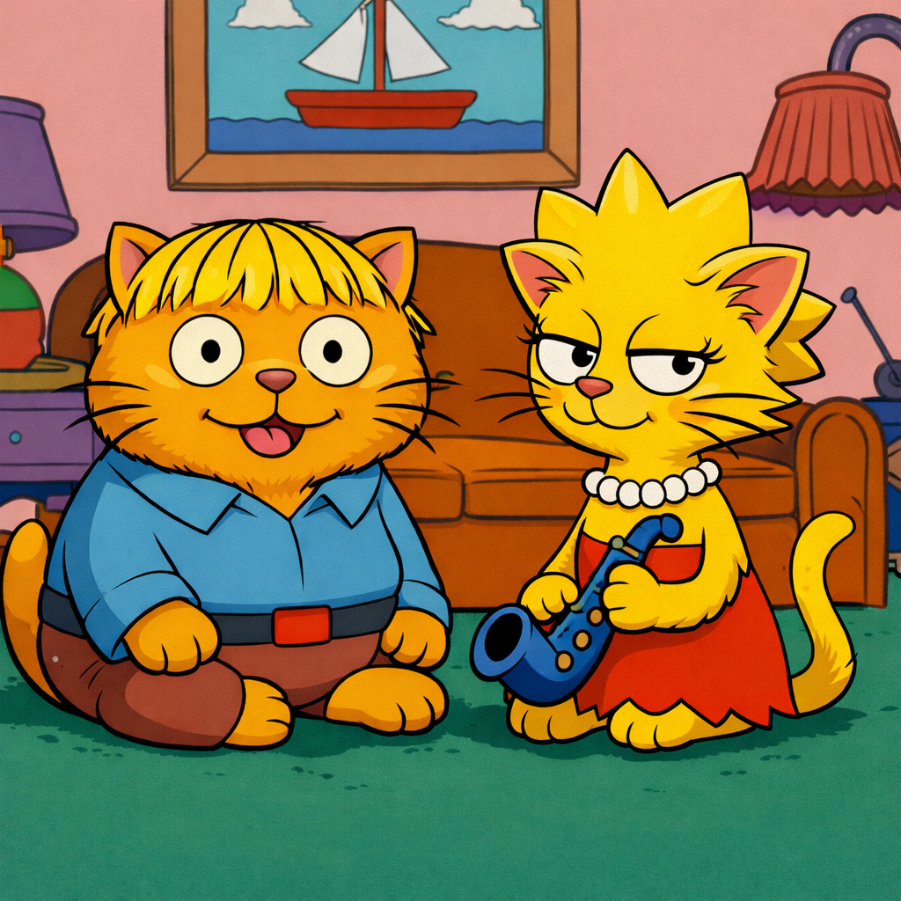

Live Benchmark Progress| Task | Repo | Gap | Epochs | Fix % | Status |
|---|
Each task goes through a closed loop: automated tests identify what's broken, an Architect analyzes failures and writes requirements, then Ralph and Lisa collaborate to fix it.
Each task runs through up to 10 epochs. Within each epoch, the Architect analyzes test failures, Ralph implements fixes with Lisa reviewing, then pytest re-evaluates. The loop stops when all tests pass or the epoch limit is reached.
Decision logic: run.py:240 —
gap→0 = solved, epoch≥10 = stopped.
Each epoch is fully independent (new workspace, new tmux session).
Solve Rate — Did the AI finish the job? Percentage of tasks where all target tests pass (gap→0). In CI/CD terms: the pipeline goes green.
Zero-Regression Rate — Can you trust it? Percentage of tasks where test counts never decreased across epochs. The SWE-CI paper (Figure 6) shows 18 models: most score 0.07–0.23, Claude-opus-4-5 reaches 51%, Claude-opus-4-6 reaches 76% (Section 4.2, Figure 6). RLL's built-in code review catches regressions before they persist.
Full conversation logs (Ralph ↔ Lisa) available on request.
Each task's complete reasoning chain, code diffs, and regression checks across all epochs.